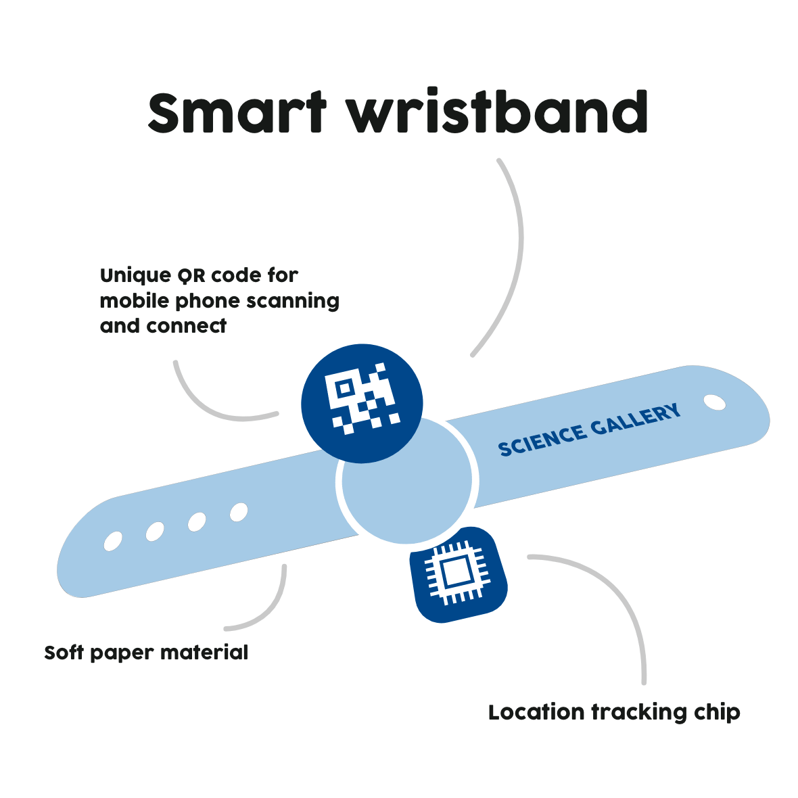
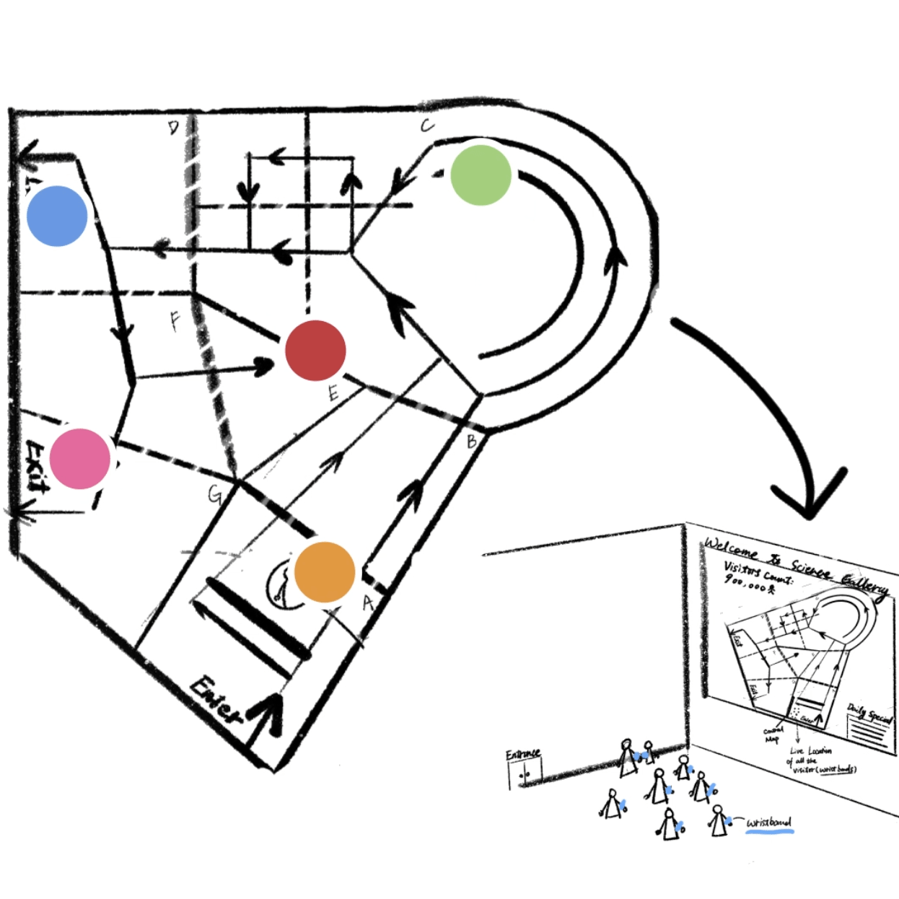

Trip-Wristband
Visitor experience solution design for Science Gallery Melbourne
2020

About
Trip-Wristband is a user experience design idea for Science Gallery Melbourne consisting of smart wristband with location tracker, website redesign, as well as interior interactive digital devices, aiming to enhance the gallery experience.
This project is a collaborative effort starting from brainstorming ideas, interviewing and investigation to developing the low-fidelity prototype design. I was responsible for initiating the ideas of the project, concept sketching, low-fidelity prototyping and demo video editing and composing.
Development
Tools
Prototyping – Adobe XD
Image assets design - Adobe Photoshop
Demo video development – Adobe After Effects
Demo video composing – Adobe Premiere Pro
Trip-Wristband Trip-Wristband Trip-Wristband Trip-Wristband Trip-Wristband Trip-Wristband Trip-Wristband Trip-Wristband Trip-Wristband Trip-Wristband
